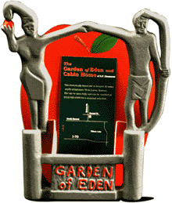
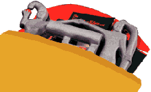

|
  |
This Display & Exhibition Design assignment was to pick an existing brochure from the professor's pile of nutty brochures, then design a countertop display to hold at least 50 of the them. I chose the brochure from "The Garden of Eden," which is a sort of outdoor exhibit of one man's cement-built Grassroots artwork. I wanted the display to portray the Garden of Eden's wacky serene image, yet still be eye catching and have a small footprint to take up as little counterspace as possible. And since these brochure displays would be mailed to businesses, the stand must disassemble to fit into a standard 9" x 11" mailing envelope. The final solution consists of a thin printed cardboard back piece (the big red apple) with tabs that folded out to hold the brochures and also attach the vacuum-formed polystyrene "statues." Assembly is quick and easy for even the slowest of gas station attendants, and the clean simple appearance should stand out amid retailers' cluttered countertops. |